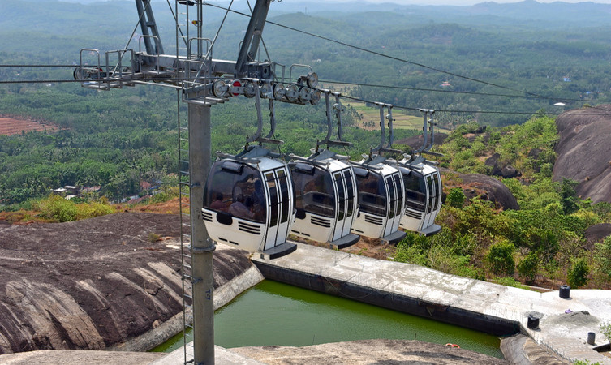

Kollam , known by its former name Quilon About this soundpronunciation and Coulão , and Desinganadu, is an old seaport and city on the Laccadive Sea coast of the Indian state of Kerala. It is situated 66 kilometers north of the state capital Trivandrum. The city is on the banks of Ashtamudi Lake. Kollam has a strong commercial reputation since the days of the Phoenicians and Romans.
The incredible beauty of Kerala, Ashtamudi lake has eight branches that coincide with the Arabian sea after converging into one channel, hence the name Ashtamudi, where Ashta means eight and mudi means branch.
Things to do - Backwater Cruising, Fishing, Experience unimaginable stay in a houseboat, Island visit.
Location - Kollam, district of Kerala
Price - Coasting by houseboat will start from INR 2500.
Timings - Welcome travelers 24 hours preferred timing by travelers from 10:00 am to 6:00 pm.
Best time to visit - To enjoy most of it, visit between November to March for cool and pleasant weather.
Climb up the 200 steps to enjoy the panoramic view of the Arabian sea and Kollam. Mounting grandly above the coconut trees, Tangasseri Lighthouse is the second tallest lighthouse with a height of 140 feet on the coast of Kerala. The red and white painted bands around the lighthouse make it marvelous and dignified. Moreover, witnessing the pleasant sunset from the top of the lighthouse is a breathtaking experience. Attracting tourists towards its enchanting beauty and calming view, an evening to the lighthouse is worth visiting among places to see in Kollam.
The center of leisure activities for people with no age limit. A must-go-to place for luxurious boating, picnic, and the art museum among other tourist places in Kollam. The park encloses a place possessing numerous rides and impressive scenery that makes it ideal for a family picnic. With the alluring backwaters, travelers can enjoy houseboat cruises, deluxe boats, and speedboats in the midst of serene waters. Apart from the boat club, children’s park, this place covers enticements such as a 200-year-old government guest house and Yatri Nivas.
An unexplored beach of Kerala where golden sand surrounds clear blue water and the serene seashore is embellished by coconut and palm trees. The delightful view of sun-soaked sand, soothing blue sea, and lush green palm never fail to attract tourists. Holding a place in the list of places to see in Kollam, tourists visit this place to get immersed in the calm and peaceful surroundings. Being one of the isolated beaches of Kerala, the beauty of the beach is still unimpaired. Just like any other beach, travelers relax and enjoy swimming and sun-bathing.